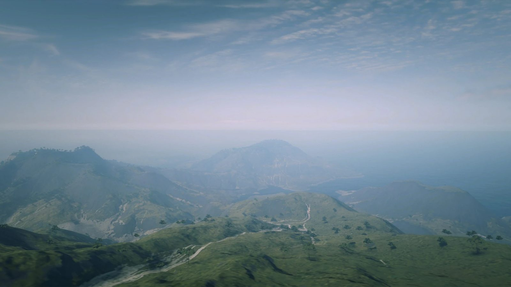
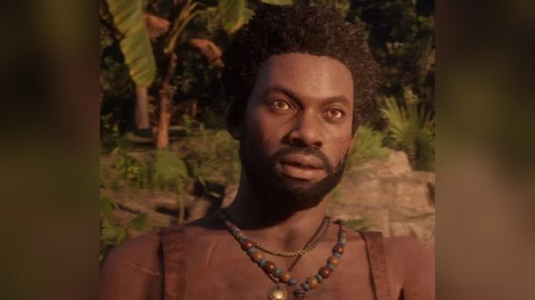
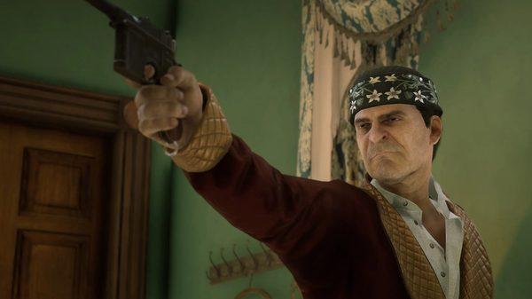
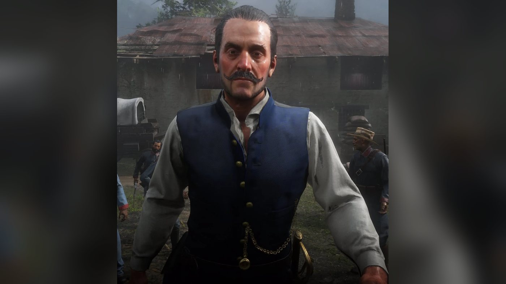
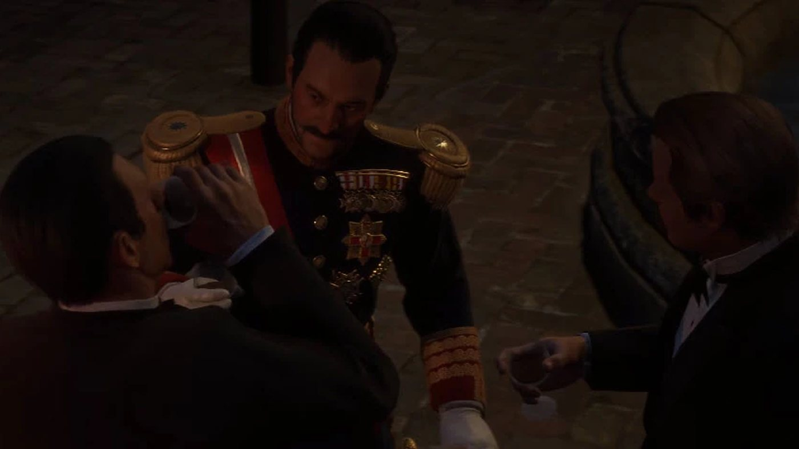
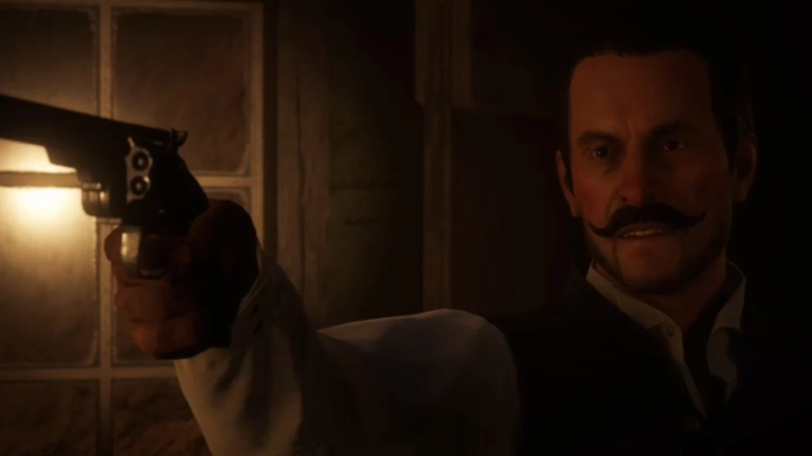
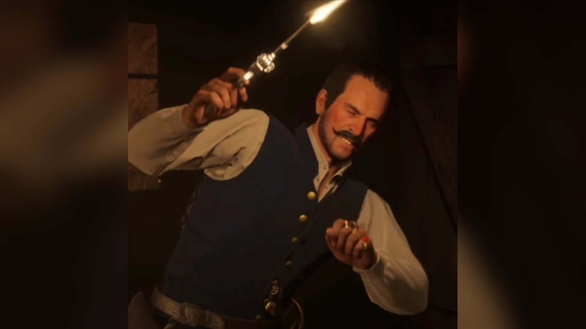

Character · Guarma
Alberto Fussar
Alberto Fussar is the governor of Guarma, a Caribbean island, in Red Dead Redemption 2 (2018), set in 1899. He holds the rank of colonel and runs the island's sugar plantation from his compound at Aguasdulces, with his overseer Levi Simon. He sells the island's sugar to Leviticus Cornwall under an exclusive purchase order. In chapter 4 he is a guest at the mayor's party in Saint Denis, where Angelo Bronte points him out to Dutch and Arthur. In chapter 5 the gang is shipwrecked on Guarma; his soldiers capture Javier Escuella, and he tries to keep the castaways on the island. Arthur kills him with a cannon shot as the gang fights its way to the ship.
He is the main antagonist of the Guarma chapter. He is played by Alfredo Narciso.
- Name
- Alberto Fussar
- Aliases
- Colonel Fussar, Mr. Fussar
- Born
- Not given in the game
- Died
- 1899, killed by Arthur Morgan on Guarma in "Paradise Mercifully Departed"
- Status
- Deceased
- Nationality
- Not stated in the game; Cuban according to the Red Dead Wiki
- Occupation
- Governor of Guarma, colonel, sugar plantation owner
- Residence
- Aguasdulces, Guarma
- Allies
- Levi Simon, his overseer; Leviticus Cornwall, who buys his sugar
- Enemies
- Hercule Fontaine and the Guarma rebels; the Van der Linde gang
- Games
- Red Dead Redemption 2
- Played by
- Alfredo Narciso
Biography
Origins
The games give no date or place of birth for Alberto Fussar and say nothing of his early life or of how he came to power. By 1899 he governs Guarma, a Caribbean island that Dutch van der Linde places second to the east of Cuba. He holds the rank of colonel. His seat is Aguasdulces, a compound with a sugar factory, guarded by his soldiers.
Sugar is the island's business. The rebel Leon Fuentes describes the plantation workers as little more than slaves brought in from other islands, worked until they die so that Fussar grows rich. The smuggler Hercule Fontaine adds that Leon wants the population to rise against Fussar, but that most people are too frightened. The Red Dead Wiki goes further: in its account, the regime tortures and executes its opponents, and the island's rebellion grew out of Fussar's rule.
His sugar sells in the United States. The article "Guarma Island Sugar Boom" (Blackwater Ledger No. 67, New Hanover Gazette No. 32, Saint Denis Times No. 48), published in chapter 4, runs under the headline "FUSSAR CALLED FRIEND THE OF THE US." (sic) and the subheading "CUBAN IMPORTS ON THE RISE". It describes Leviticus Cornwall beside a ship unloading Cuban sugar from Guarma, praising a new era of cooperation between the two countries. Cornwall, the article says, toured sugar plantations in the region twice and signed an exclusive purchase order with the governor, whom he had praised as a friend of America. The paper also gives the critics' view. It says the boom undercuts the American sugar industry and costs American jobs. It reports that Fussar's opponents see him as a controversial and sometimes cruel ruler who runs the island almost like a military post, and that his plantation workers put in very long shifts.
Red Dead Redemption 2 (1899)
Chapter 4: Saint Denis
Fussar's first appearance is at the garden party given by Mayor Henri Lemieux at his mansion in Saint Denis, in "The Gilded Cage". Angelo Bronte, who has invited the gang, receives Dutch and Arthur Morgan on a balcony and runs through the guests for them. After the mayor, he picks out Fussar. Bronte says that Fussar owns a sugar plantation on the island and comes to the city to indulge himself, and Dutch laughs with him. Fussar says nothing in the scene. Bronte moves on to Hobart Crawley, to Rains Fall and Eagle Flies, and to the newspaperman Hector Fellowes.
At the end of chapter 4, after the failed robbery of the Saint Denis bank, Dutch, Arthur, Micah Bell, Bill Williamson and Javier Escuella escape on a ship that sinks in a storm. The five men wash up on Guarma, Fussar's island.
Chapter 5: Guarma
Fussar does not appear in the first Guarma missions. In "Welcome to the New World", soldiers led by Levi Simon chain the castaways on the beach together with captured local rebels. Simon presents himself as Fussar's senior overseer and speaks of labor troubles and of Haitian pirates who will soon be hanged in the streets. Dutch gives a false name and Simon promises to free the five men once he knows who they are. In Spanish, he orders a corporal to take them to the jail with the rebels and to shoot them all at the first sign of trouble, then leaves. Hercule Fontaine's rebels ambush the column. Javier is shot in the leg and taken, while the others escape with Hercule, who warns them that Fussar will be desperate to find them. He points out Aguasdulces and the factory where the island's cane is processed.
Fussar's men are hunting a group of workers who escaped into the jungle the day before. In "Savagery Unleashed", Arthur is knocked out by a dart in the jungle and wakes up tied to a chair, where a soldier beats him and demands to know who he is. Arthur gives the false name Leviticus Cornwall, breaks the chair and knocks the soldier out. He and Leon Fuentes then save some of the escaped workers from the gallows.
He appears in person in "A Kind and Benevolent Despot". On the way through the caves to Aguasdulces, Arthur asks whether Fussar was not one of the men Bronte showed them at the party in Saint Denis, and Dutch agrees that he knew the name. At the top of the ladder, the two men see Fussar arrive with his soldiers and Simon, dragging the captured Javier behind a donkey. Fussar asks Javier who he is; Javier answers that he comes from Mexico and has never met the other men. Fussar mocks him in front of his soldiers, one of whom punches Javier in the face, then leaves him with a parting jibe about Mexicans.
While Dutch and Arthur creep around the compound, Fussar can be heard addressing his men in Spanish. He tells them he has just been in America, describes how strikers are dealt with there, and holds it up as the order he wants on Guarma. Meanwhile his soldiers threaten to break Javier's kneecaps to make him talk. Javier keeps repeating that he knows nothing; according to the Red Dead Wiki, he tells them nothing. He is held in a cage. Dutch and Arthur kill the guards inside the refinery, spill the sugar from its sacks and set off the furnace. The building explodes, they take Javier from his cage and fight their way out through the cane fields. Fussar is not seen again in the mission.
In "Hell Hath No Fury", the gang joins Hercule at the old fort of Cinco Torres. Hercule tells Dutch that Fussar now knows who they are and what price is on their heads. If they can silence him, Hercule says, he can get them away before anyone arrives from America; but Fussar has called in the navy from Cuba, and no boat can leave for now. A warship appears offshore and shells the coast, while soldiers come ashore on the beach below the fort. When one of its shells falls among its own men, Dutch thanks Fussar aloud. Arthur asks how many men Fussar has; Hercule answers that the number does not matter, because Fussar has the money to hire more. Arthur sinks the warship with the fort's cannon, and Hercule announces that a boat is on its way.
At the start of "Paradise Mercifully Departed", Micah comes back from scouting with bad news: Fussar knows exactly who they are and wants to keep them on the island for a few more days. His men hold the ship's captain, and gun positions cover the harbor so that any boat trying to sail will be shot to pieces. Hercule declares that he will fight Fussar every day he can. Bill stays on the ship with the recovering Javier, while Dutch, Arthur, Micah and Hercule blow up the coastal guns with dynamite and fight their way into Aguasdulces, where the captain is held in a blue building.
Inside the cabin, Simon is lying in wait; he knocks Arthur to the floor and holds him at gunpoint. Dutch walks in and aims at Simon. Fussar then walks in, revolver drawn, and tells them they are going to die; Dutch draws his second revolver to cover him, and Arthur aims at Fussar from the floor. Fussar warns that the United States Navy is on its way. Dutch answers that this is exactly why Fussar will let them leave, or die where he stands. Arthur kicks a rifle lying on the floor over to the captain, who shoots Simon in the chest and kills him. Fussar fires a few shots and runs out of the cabin; moments later Dutch asks whether he has escaped.
The group runs for the ship through Fussar's soldiers. Near the port, Hercule spots Fussar at the top of a tower, where he loads a cannon and opens fire on them. Hercule sends Arthur to a second cannon on the ground, further ahead on the left; according to the Red Dead Wiki, Hercule draws Fussar's fire so that Arthur can reach it. Arthur fires at the tower and blows its top apart, killing Fussar. Arthur remarks that he got Fussar for Javier. The captain takes the five gang members on board, Hercule says the rebels will probably disappear back to Haiti, and the ship sails for America. Fussar dies in 1899.
Back in the United States, a later issue of the papers (Blackwater Ledger No. 68, New Hanover Gazette No. 33, Saint Denis Times No. 49) carries the article "Leader of Guarma Assassinated", headed "ALBERTO FUSSAR DEAD.", "BELOVED LEADER CUT DOWN." and "GREAT SORROW AND SCENES OF RAGE IN GUARMA." It reports that the killing caused great excitement on many islands of the Spanish West Indies. It states that "Reports conflict as to the details of his demise, though early assumptions are that it was part of an attempted coup." American business leaders praise him in the article, which also credits him with a particular concern for the women of the island and notes that American firms traded heavily with him in sugar. The killing was first blamed on a revolt of the plantation workers, but "reports have begun to reach the mainland that several white men were involved in the assassination", and some blame a band of socialist insurrectionists. Some locals, according to the article, say tensions had grown as working conditions worsened under American pressure for cheaper sugar.
After his death: the epilogue (1907)
Fussar is mentioned once more in the newspapers of the epilogue period (Blackwater Ledger No. 74, New Hanover Gazette No. 39, Saint Denis Times No. 55). The article "Unrest in the Tropics", headed "COST OF FOOD, FUEL ANGERS CITIZENS.", describes soaring prices and shortages from Barbados to Cuba. It recalls "the assassination of prominent sugar industry advocate and Guarman governor Alberto Fussar in 1899". It reports that, shortly afterwards, American banking institutions, JD McKnight and Co. among them, took control of the sugar industry on several islands, Guarma included. Fields that once fed the islanders were turned over to sugar cane, so that all food has to be imported at great expense. The foreign investors hire locals to guard their plantations, "subjecting workers to harsh conditions and penalties". According to the Red Dead Wiki, McKnight's company also took over many of Cornwall's businesses.
Personality
Rockstar's character descriptions of September 2018 cover the Van der Linde gang and do not include Fussar. The in-game newspaper article "Guarma Island Sugar Boom", published in chapter 4, reports that his detractors call him "a controversial figure who is flamboyant at times and cruel at others", and that he holds Guarma "under a quasi-military rule". After his death, "Leader of Guarma Assassinated" reports that American business leaders describe him as "a kind and effective leader who brought peace and prosperity to the region". The same article says they saw him as "a progressive leader and humanitarian" who supported workers' rights.
The people of Guarma describe him otherwise. Asked by Dutch who Fussar is, the rebel Leon Fuentes answers: "A tyrant, driven by nothing but power and greed. Our only purpose is to work ourselves to death... to make him rich." In Saint Denis, Angelo Bronte says the governor "comes here to whore and despoil himself". Before the last attack on Aguasdulces, Micah says: "I like the man's style... he's thorough, nasty and vindictive." When Fussar opens fire from the tower, Arthur calls him "This goddamn idiot".
On Guarma, Fussar speaks English to the gang and partly to Javier, and Spanish to his soldiers. In a speech to his men, he holds up the United States as a model of order (see In his own words). In the cabin standoff, he is the one who breaks away and runs (see Biography).
In his own words
No transcript of his scenes is published on the Red Dead Wiki; the lines below are checked against a fan transcript of the game and against the wiki's quote list. His lines to the soldiers are spoken in Spanish and quoted here from the English subtitles. To Javier, who claims he never met the other castaways, he says: "Mr. Simon doesn't believe you... even the mule doesn't believe you." To his troops at Aguasdulces: "Men... I was just in America... do you know how they deal with striking workers there? Do you know? They shoot them! That is civilization. That is future. That is law and order and that is what we must bring to this place. And this is how we will deal with them here... our duty is to be fierce." A little later, in the same speech: "...cowards are the worst traitors of all, for they don't mean their betrayal, but it is betrayal all the same." In the cabin standoff of "Paradise Mercifully Departed", his only two lines are: "You maggots are going to die." and, after Dutch's reply, "The US Navy is on the way." The wiki's quote list adds a further line of his, without context, that is not in the fan transcript: "The last few days have been very unsettling for all of us, but now is the time... to show our ferocity."
Names
His full name, Alberto Fussar, is used by Bronte at the party, by Levi Simon, by Hercule and by the newspapers. Hercule calls him Colonel Fussar. His overseer Levi Simon, Dutch and Micah say Mr. Fussar; Micah adds a sarcastic "Nice Mr. Fussar". The newspapers call him the governor of Guarma. The Red Dead Wiki lists Colonel Fussar and Mr. Fussar as his aliases.
Appearance
Fussar has dark hair combed straight back, a curled, waxed mustache and stubble. At the mayor's party he wears a uniform decorated with medals. On Guarma he wears a blue vest over a white shirt, with a watch chain and a sabre at his side.
Relationships

Leviticus Cornwall
The industrialist buys Guarma's sugar from Fussar under an exclusive purchase order, according to "Guarma Island Sugar Boom" (see Biography). The same article reports that Cornwall called the governor "a great friend of America". In chapter 6, Dutch tells Arthur that Cornwall's sugar business is destroying the people of Guarma.
Levi Simon
The overseer of the plantation, an American according to the Red Dead Wiki, is Fussar's right-hand man. His patrol arrests the castaways, and he stands at Fussar's side while Javier is questioned. He dies in the cabin standoff, shot by the ship's captain (see Biography).

Hercule Fontaine
The smuggler moves goods on and off the island behind the colonel's back and backs the rebels against him. He promises the gang a boat in return for helping Leon's escaped workers. Later he tells them that if Fussar can be silenced, he can get them off the island (see Biography).
Leon Fuentes
This rebel is chained with the castaways after his arrest by Fussar's soldiers, then freed in Hercule's ambush. He wants the island's people to rise against Fussar; his description of the colonel is quoted under Personality.

Javier Escuella
Captured by Fussar's soldiers, Javier is dragged into Aguasdulces and questioned in front of Fussar, who mocks his claim never to have met the other castaways. Dutch and Arthur free him the same day (see Biography).

Arthur Morgan
Arthur is held at gunpoint by Simon in the cabin standoff, then kills Fussar with a cannon shot at the tower (see Biography).

Dutch van der Linde
Dutch gives Simon a false name, Aiden O'Malley, so that their captors cannot find out who the castaways are. In the cabin he faces Fussar and Simon with a revolver in each hand (see Biography).

Micah Bell
When the warship appears, Micah remarks that one has to hand it to Fussar. Sent to meet the captain, he comes back to report that Fussar's men hold him and have set up gun positions, and rigs the second set of guns with dynamite (see Biography). His verdict on Fussar is quoted under Personality.

Bill Williamson
Bill fights Fussar's soldiers on the beach of Cinco Torres and cheers Arthur on at the cannon against the warship. He stays aboard the ship to guard Javier during the attack on Aguasdulces (see Biography).
The ship's captain
The captain Hercule finds for the gang is seized by Fussar's men and held in the workers' cabin at Aguasdulces. In the standoff, Arthur kicks him a rifle and he shoots Simon dead. Before sailing, he says he wants no more surprise interviews with local officials (see Biography).

Angelo Bronte
On a balcony at the mayor's party in "The Gilded Cage", Bronte points Fussar out to Dutch and Arthur as a sugar planter from the island (see Biography). His remark on Fussar's visits is quoted under Personality.
Henri Lemieux
The mayor of Saint Denis hosts the party where Fussar appears as a guest in chapter 4.
Angel
The Red Dead Wiki presents this soldier as Fussar's interrogator. Arthur, knocked out by a dart in the jungle, wakes up tied to a chair in front of him and frees himself (see Biography).
Power on Guarma
Governor and colonel
His two titles, governor and colonel, are listed under Names. The Red Dead Wiki places him at the head of the Cuban Military on the island and gives his nationality as Cuban; the game itself never states it. The article "Guarma Island Sugar Boom" describes the sugar that Leviticus Cornwall imports from the island as Cuban sugar. His seat is Aguasdulces, which Hercule points out to the gang as "Fussar's compound". The Red Dead Wiki describes the estate: a manor with prisoner cages around it, the sugar factory and a mill, along with a barn and a well, all inside a stone wall. An old, ruined tower on the grounds leads down into the caves.
The sugar plantation
Levi Simon introduces himself as "Senior Overseer for Alberto Fussar" and boasts: "We run the third most productive sugar plantation in the Northern Caribbean." Hercule explains that the cane cut by the workers is processed in the factory at Aguasdulces. Leon Fuentes says the workers are "little more than slaves shipped in from other islands", and that a group of them fled into the jungle the day before. "Guarma Island Sugar Boom" reports that plantation workers often put in 14-hour shifts, and that his security force is "reportedly feared across the island". Cornwall buys the island's sugar under an exclusive purchase order (see Relationships).
Soldiers, navy and guns
Fussar commands uniformed soldiers who patrol the island, chain prisoners and guard Aguasdulces. Simon warns Dutch that "Mr. Fussar has a lot of very powerful friends". He calls in a warship from Cuba and sets gun positions around the harbor (see Biography). During the fighting, Arthur asks how many men Fussar has, and Hercule answers: "It doesn't matter how many we kill. He will have the money to get more."
Weapons
The Red Dead Wiki gives him a Schofield revolver and a sabre. He draws a revolver on Dutch in the cabin standoff and fires several shots into the air as he flees. From the tower over the harbor he loads and fires a cannon. According to the mission page, Arthur can either bring down the tower with a second cannon or shoot Fussar directly. The character page adds that a single shot from any gun kills him if the player finds the right angle.
Missions
The Red Dead Wiki lists three missions of Red Dead Redemption 2 in which Fussar appears: one in chapter 4 and two in chapter 5. He speaks only in the two Guarma missions. Three other Guarma missions are driven by his regime without showing him; they are listed in the second table.
Appearances
| Mission | Chapter | Fussar's role |
|---|---|---|
| The Gilded Cage | 4. Saint Denis | A guest at Mayor Lemieux's party in Saint Denis. Bronte points him out to Dutch and Arthur from a balcony. |
| A Kind and Benevolent Despot | 5. Guarma | Mocks the captured Javier in Aguasdulces, then harangues his soldiers while Dutch and Arthur slip into his refinery, which they blow up to free Javier. |
| Paradise Mercifully Departed | 5. Guarma | Joins the standoff in the cabin where the ship's captain is held, escapes after Levi Simon is shot, then fires on the gang from a tower; Arthur kills him. |
Missions shaped by his regime
| Mission | Chapter | Link with Fussar |
|---|---|---|
| Welcome to the New World | 5. Guarma | His overseer, Levi Simon, has the castaways chained; Hercule Fontaine and Leon Fuentes describe his rule over Guarma. |
| Savagery Unleashed | 5. Guarma | Arthur and Leon Fuentes save plantation workers whom the island's soldiers are hanging. |
| Hell Hath No Fury | 5. Guarma | The warship he called in from Cuba attacks Cinco Torres; Arthur sinks it with the fort's cannon. |
Quotes
The lines below are spoken about Fussar by other characters. They are given in the original English and checked against a fan transcript of the game. Fussar's own lines are under Personality.
Okay. Well, Fussar will be desperate to find you. We must be very careful.
Hercule Fontaine to Dutch, after the ambush, Welcome to the New World (RDR2, chapter 5)I am not from here. I bring things in and off the islands... behind Colonel Fussar's back.
Hercule Fontaine, when Dutch asks about him, Welcome to the New World (RDR2, chapter 5)You know, wasn't Fussar one of the fellers Bronte pointed out to us at the party in Saint Denis?
Arthur to Dutch in the caves, A Kind and Benevolent Despot (RDR2, chapter 5)Very kind of you, Mr. Fussar!
Dutch, as the warship's fire hits its own soldiers, Hell Hath No Fury (RDR2, chapter 5)This feller is really beginning to try my patience. / And he ain't even had you tortured yet.
Dutch, then Arthur, after Micah's report on the captain and the gun positions, Paradise Mercifully Departed (RDR2, chapter 5)Oh, I'll fight Alberto Fussar every day I can.
Hercule Fontaine, when Dutch asks if he is in, Paradise Mercifully Departed (RDR2, chapter 5)Fussar is up there I think. / In the tower? / Yes. Yes, that's him.
Hercule Fontaine, then Arthur, then Hercule, near the harbor, Paradise Mercifully Departed (RDR2, chapter 5)I got him for you, Javier.
Arthur, after destroying Fussar's tower, Paradise Mercifully Departed (RDR2, chapter 5)
Development and performance
Casting
Alberto Fussar appears only in Red Dead Redemption 2 (2018). He is played by Alfredo Narciso, credited in the role by Wikipedia's list of the game's characters, which cites the game's credits, and by the Red Dead Wiki. Narciso, born in Milwaukee, Wisconsin, is a New York-based stage and screen actor. His Broadway credits include The Motherfucker with the Hat and A Streetcar Named Desire, and his television credits include House of Cards, Homeland and Manifest. On November 6, 2018, shortly after the game's release, he posted on his website: "Check me out as the villain, Alberto Fussar, in Red Dead Redemption 2! Looks like fun, maggots." His later website biography says he "can also be heard voicing Alberto Fussar". No interview in which he discusses the role has been found, and no source names him for the character's motion capture.
Cut content
The Red Dead Wiki's page on cut content lists several traces of unused material around Fussar in the game files. A character known only as "Madeline Fussar" has leftover files, with hair, a turban and an open and a closed veil. Animation files mention characters called "GulFussars", which appear to be Fussar's men. Fussar himself has an unused hairstyle. A lady in a turban is labeled for "A Kind and Benevolent Despot", whose internal name is "Fussar1". The same page describes a cut Guarma mission in which Arthur and Bill would have rescued the niece of the rebel Leon Fuentes; its dialogue sits in the audio bank of "A Kind and Benevolent Despot".
Reception
Ranked last in WhatCulture's 2022 list
WhatCulture's Matt Thompson ranked fifteen villains of the Red Dead Redemption games on February 7, 2022, and put Fussar fifteenth, in last place. He called chapter 5 "a lulling low-point in the game" and wrote that the revolution on Guarma has no impact on the rest of the story. He described Fussar as "a nothing character; a nameless, almost faceless villain", whose role as a threat could have been filled by a horde of militiamen. He granted that "a loose tie to Leviticus Cornwall does make the villain more three-dimensional". He added that the chapter shows Fussar's cruelty through tortured and amputated rebels, but without letting the player see glee or malice from Fussar himself, and that the game makes more of his right-hand man, Levi Simon.
Other media and legacy
Fussar appears only in Red Dead Redemption 2. He has no role in Red Dead Online, where Guarma cannot be visited. According to the Red Dead Wiki, a flag bearing the island's coat of arms can be unlocked there as a camp flag at rank 59 of the third Outlaw Pass.
Trivia
- According to the French edition of the Red Dead Wiki, the player cannot talk to Fussar during the party in "The Gilded Cage", and he is only present while Dutch and Arthur are with Bronte on the balcony.
- The newspaper article on the mayor's party, "Mayor's Gala Was Grand" (Blackwater Ledger No. 67), lists Archibald Jameson, Major Hobart Crawley, Gilbert Knightly, Hector Fellowes and Angelo Bronte among the guests, but does not name Fussar. The same issue carries "Guarma Island Sugar Boom".
- In "A Kind and Benevolent Despot", opening fire on Fussar or his soldiers once Javier has been seen fails the mission, and a cutscene shows the guards killing Javier.
- Firing the cannon at Fussar's tower stops the clock on one of the Gold Medal objectives of "Paradise Mercifully Departed": escorting the captain to the boat within 1 minute and 45 seconds.
- According to the Red Dead Wiki, the double-revolver standoff in the cabin happens again in "American Venom", the last mission of the 1907 epilogue.
- The Red Dead Wiki's list of the people Arthur kills counts three named deaths that the story imposes on him: Sheriff Leigh Gray, Alberto Fussar and Colonel Henry Favours.
Gallery



